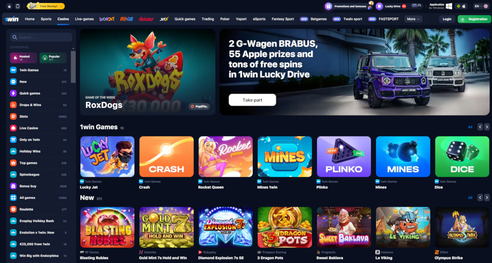
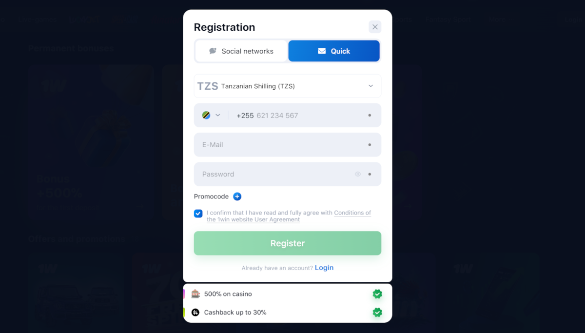
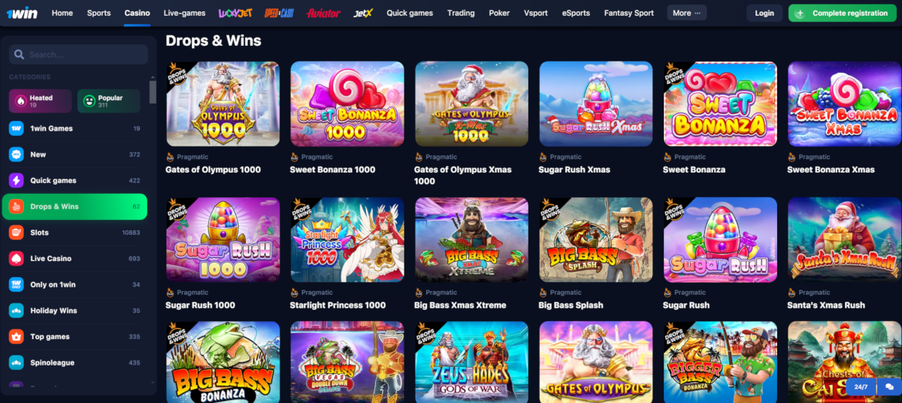

1Win Tanzania Enjoy the Best Online Casino Experience
Online gambling is gaining traction in Tanzania, and 1Win is one of the platforms leading the charge. With a user-friendly interface, a variety of games, and multiple banking options, it has become a popular choice among players.
Whether you're a casual gamer or someone looking for serious betting opportunities, 1Win Tanzania offers a range of options tailored for the Tanzanian market. But does it live up to expectations? Let's break it down.
GOL51Win TZ – General Information About Casino
1Win TZ is an international online casino and sportsbook that provides a mix of gambling and betting services. Designed to cater to different types of players, it offers:
- A massive collection of slots, table games, and live casino options.
- A sportsbook with competitive odds on local and international events.
- Support for mobile and desktop gaming without the need for additional software.
- Various bonuses and promotions for both new and existing users.
What makes 1Win TZ stand out in Tanzania is its accessibility. The platform supports Swahili and English, offers local payment methods, and ensures a smooth gaming experience for users in the region.
Key Information
🔍 Category | 📌 Details |
|---|---|
🏢 Company | 1Win N.V. |
📜 License | Curacao eGaming |
🔢 License Number | 8048/JAZ2018-040 |
📅 Founded | 2018 |
💰 Minimum Bet | $0.10 |
💵 Maximum Bet | Varies by game and event |
🎰 Casino Games | Slots, Table Games, Live Casino |
⚽ Sports Betting | Available with live betting options |
📱 Mobile App | Available for Android & iOS |
💳 Deposit Methods | Mobile Money, Cards, E-wallets, Crypto |
💸 Withdrawal Time | 1–24 hours (depending on method) |
🎁 Welcome Bonus | 100% deposit bonus for new players |
🛠 Customer Support | Live chat, Email, FAQ section |
1Win Features
What sets 1Win apart from other platforms? Here are some of its defining features:
- Easy registration – A fast sign-up process that takes minutes to complete.
- Wide range of games – Slots, table games, live dealer options, and sports betting all in one place.
- Multiple payment methods – Supports local and international deposit and withdrawal options.
- Mobile compatibility – A well-optimized mobile site and a dedicated app for better accessibility.
- Bonuses and promotions – Frequent offers that reward both new and regular players.
- Live betting – Real-time sports betting with updated odds.

1Win Online – Pros and Cons
Like any online platform, 1 Win Online has its strengths and weaknesses.
Pros:
- Extensive game selection with thousands of slot games and live dealer options.
- User-friendly interface that works well on both desktop and mobile.
- Fast transactions with multiple payment gateways, including mobile money.
- Attractive bonuses for new players and ongoing promotions for loyal users.
- Local accessibility with Swahili and English language support.
Cons:
- Limited customer support options – While available, response times can sometimes be slow.
- Withdrawal limits – Some restrictions apply depending on the payment method.
1Win Online provides a well-rounded experience, especially for Tanzanian players looking for a reliable online casino with diverse gaming options.
🎁 1Win Bonuses – Welcome and Other Promotions
One of the standout features of 1 Win is its variety of bonuses designed to enhance the gaming experience. Here’s what Tanzanian players can expect:
- 🎉 Welcome Bonus – New players receive a 100% match bonus on their first 1Win deposit, instantly boosting their starting balance.
- 💸 Cashback Bonus – A percentage of lost bets is returned to players, giving them another chance to win.
- 🎰 Free Spins – Regular promotions offer free spins on popular slot games.
- 🎟 Promo Codes – Special codes unlock exclusive rewards like extra bonuses and free bets.
- ⚽ Sports Betting Bonuses – Boosted odds, risk-free bets, and accumulator bonuses for sports fans.
- 🔄 Reload Bonuses – Extra bonuses on future deposits to keep players engaged.
- 🏆 VIP Rewards – Loyal players gain access to exclusive offers and bigger promotions.
- 🎁 Surprise Gifts – Random rewards for active users, including cashback and free bets.
1Win makes it easier for players in Tanzania to maximize their winnings and enjoy a rewarding gaming experience. 🚀
1Win Official Registration – How to Sign Up
Getting started on 1Win Official is a straightforward process. The platform ensures that new players can register quickly and begin playing with minimal effort.
- Step 1: Visit the 1Win site and locate the registration button.
- Step 2: Choose a sign-up method – email, phone number, or social media.
- Step 3: Fill in the required details, including name, email, and preferred currency.
- Step 4: Confirm your account via email or SMS verification.
- Step 5: Make your first 1Win deposit and claim any available welcome bonuses.
Once registered, users gain full access to the platform’s features, including games, betting options, and promotions.
1Win Login – How to Access Your Account
Logging into 1Win is simple, allowing users to access their accounts in seconds.
- Go to the 1Win site on desktop or mobile.
- Click the login button at the top of the page.
- Enter your credentials – email, phone number, or username along with the password.
- Click the login button and start playing.
For convenience, the platform also supports social media login and password recovery options if users forget their details.

1Win Deposit and Withdrawals – Payment Methods
1Win supports various payment methods, making transactions easy for Tanzanian players.
- Deposit Methods: Players can fund their accounts using mobile money services, credit and debit cards, e-wallets, and cryptocurrency.
- Withdrawal Options: Bank transfers, e-wallets, and crypto payouts are the most common methods for cashing out winnings.
- Deposits are usually instant, while withdrawals may take a few hours or up to a day, depending on the method used. The platform ensures secure transactions, allowing players to manage their funds safely.
Payment Methods and Processing Time
💰 Payment Method | ⏳ Deposit Time | 💸 Withdrawal Time |
|---|---|---|
📱 Mobile Money (Mpesa, Airtel, Tigo) | Instant | 1–6 hours |
💳 Visa / Mastercard | Instant | 1–3 business days |
🏦 Bank Transfer | 1–2 hours | 1–3 business days |
🌐 E-wallets (Skrill, Neteller) | Instant | 1–24 hours |
🪙 Cryptocurrency (Bitcoin, Ethereum) | Instant | 1–12 hours |
💷 PayPal | Instant | 1–24 hours |
🏧 Prepaid Cards | Instant | Not available |
🎟 Voucher Payments | Instant | Not available |
1Win App – Mobile Version and Its Advantages
For players who prefer gaming on the go, the 1Win app offers a seamless experience. Designed for both Android and iOS, it provides the full functionality of the desktop version without compromising speed or quality.
- Optimized for Mobile – The app runs smoothly, offering fast load times and easy navigation.
- Full Access to Games and Betting – Players can enjoy casino games, live dealer tables, and sports betting.
- Push Notifications – Users receive real-time updates on promotions, game results, and account activities.
- Secure Transactions – The app supports deposits and withdrawals with the same security measures as the main 1Win site.
How to Download and Install the 1Win App
- Visit the 1Win site on your mobile browser.
- Locate the app download section and choose the version for your device.
- For Android, enable "Install from Unknown Sources" in settings before installing.
- For iOS, follow the installation prompts and complete the setup.
- Open the app, log in, and start playing.
With the 1Win app, players can enjoy a convenient and uninterrupted gaming experience anytime, anywhere.
1Win Site – Providers and Games
The 1Win site offers a vast selection of casino games, supported by leading software providers. Whether you prefer slots, table games, or live dealer options, there is something for every type of player.
- Slot Games – Thousands of slot titles from providers like NetEnt, Microgaming, and Pragmatic Play.
- Table Games – Variations of blackjack, roulette, poker, and baccarat.
- Live Casino – Real-time gaming with professional dealers from Evolution Gaming and Ezugi.
- Sports Betting – Coverage of international and local sporting events with competitive odds.
The diverse game selection ensures that players can always find something new and exciting to try.

Author's Opinion
After exploring the platform, it's clear that 1Win offers a solid experience for Tanzanian players. The variety of games, generous bonuses, and convenient mobile access make it a competitive choice in the online gambling space. Transactions are straightforward, and the inclusion of mobile money options is a plus for local users.
One drawback is that customer support could be more responsive, especially during peak hours. While the platform covers all essential features, faster assistance would improve the overall user experience.
1Win is a great option for both casino and sports betting enthusiasts, providing a reliable and engaging gaming environment.
FAQ – Common Questions About 1Win
How can I create a 1Win account?
To register, visit the 1Win site, click the sign-up button, enter your details, and complete the verification process. It only takes a few minutes.
What payment methods does 1Win com support?
Players can use mobile money services, bank transfers, credit/debit cards, e-wallets, and cryptocurrency for deposits and withdrawals on 1Win.
Is there a 1Win mobile app?
Yes, 1Win offers a dedicated app for Android and iOS users. It provides full access to casino games, sports betting, and account management on the go.
How long do withdrawals take on 1Win?
Withdrawal times depend on the method used. Mobile money and e-wallet transactions are usually processed within a few hours, while bank transfers may take 1–3 business days.
Are there any bonuses for new players on 1Win?
Yes, new players receive a welcome bonus on their first 1Win deposit, along with other promotions like free spins, cashback, and sports betting offers.